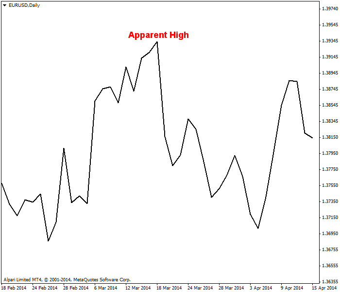
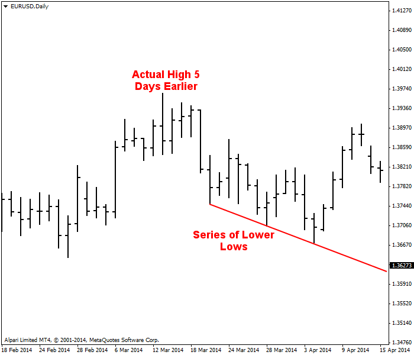
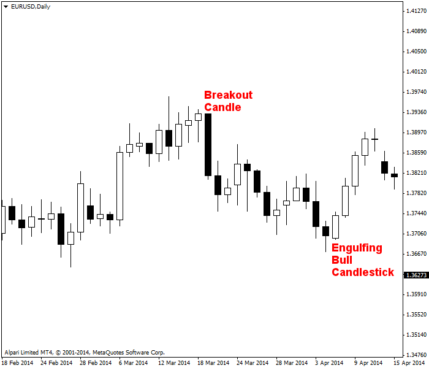
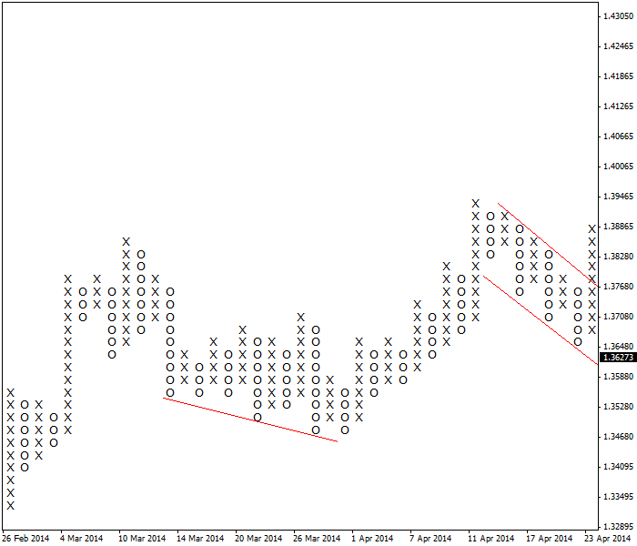
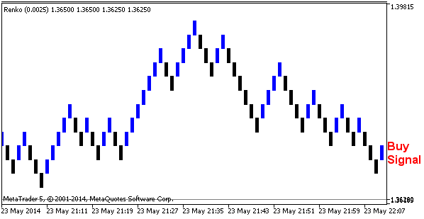
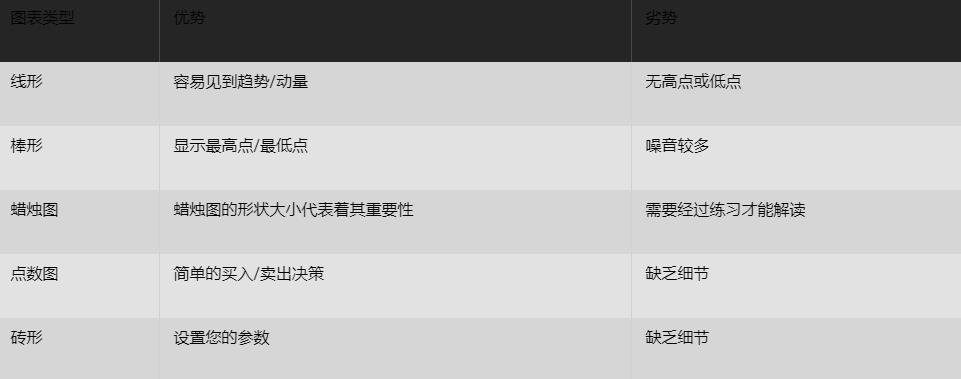

<!DOCTYPE html>
<html>
</html>
<head>
  <meta charset="utf-8">
  <meta http-equiv="X-UA-Compatible" content="IE=edge">
  <title>外汇站（fx-z.com） - 哪种图表类型最好？</title>
  <meta name="description" content="">
  <meta name="viewport" content="width=device-width, initial-scale=1">
  <meta name="robots" content="all,follow">
  <!-- Bootstrap CSS-->
  <link rel="stylesheet" href="vendor/bootstrap/css/bootstrap.min.css">
  <!-- Font Awesome CSS-->
  <link rel="stylesheet" href="vendor/font-awesome/css/font-awesome.min.css">
  <!-- Google fonts - Roboto-->
  <link rel="stylesheet" href="https://fonts.googleapis.com/css?family=Roboto:400,300,700,400italic">
  <!-- owl carousel-->
  <link rel="stylesheet" href="vendor/owl.carousel/assets/owl.carousel.css">
  <link rel="stylesheet" href="vendor/owl.carousel/assets/owl.theme.default.css">
  <!-- theme stylesheet-->
  <link rel="stylesheet" href="css/style.default.css" id="theme-stylesheet">
  <!-- Custom stylesheet - for your changes-->
  <link rel="stylesheet" href="css/custom.css">
  <!-- Favicon-->
  <link rel="shortcut icon" href="img/favicon.png">
  <!-- Tweaks for older IEs--><!--[if lt IE 9]>
    <script src="https://oss.maxcdn.com/html5shiv/3.7.3/html5shiv.min.js"></script>
    <script src="https://oss.maxcdn.com/respond/1.4.2/respond.min.js"></script><![endif]-->
</head>
<body>
  <div id="all">
    <div class="container-fluid">
      <div class="row row-offcanvas row-offcanvas-left"> 
        <!--   *** SIDEBAR ***-->
        <div id="sidebar" class="col-md-4 col-lg-3 sidebar-offcanvas">
          <div class="sidebar-content">
            <h1 class="sidebar-heading"> <a href="https://fx-z.com">fx-z.com</a></h1>
            <p class="sidebar-p">介绍外汇相关的基本知识，告诉您如何进行自己的技术面和基本面分析，讲解先进的交易理念，并且为您阐述失败交易者与专业交易者之间的真正区别。 </p>
            <p class="sidebar-p">通过这些课程的学习，您将学会如何根据自己的优势来应用情绪分析，还将了解真实世界的事件会对货币汇率产生什么影响，央行在外汇市场中所发挥的作用，以及交易者在颇受欢迎的即期外汇交易中有哪些选择方案。 </p>
            <ul class="sidebar-menu">
                <!-- Link-->
                <li class="sidebar-item"><a href="https://fx-z.com" class="sidebar-link">首页</a></li>
                <!-- Link-->
                <li class="sidebar-item"><a href="cihui.html" class="sidebar-link">外汇词汇</a></li>
                <!-- Link-->
                <li class="sidebar-item"><a href="ebook.html" class="sidebar-link">获取外汇电子书</a></li>
            </ul>
            <p class="social"><a href="https://www.cn-forextime.com/zh?partner_id=4920383" target="_blank"data-animate-hover="pulse" class="external facebook"><i class="fa fa-eur"></i></a><a href="https://www.cn-forextime.com/zh?partner_id=4920383" target="_blank" data-animate-hover="pulse" class="external gplus"><i class="fa fa-gbp"></i></a><a href="https://www.cn-forextime.com/zh?partner_id=4920383" target="_blank" data-animate-hover="pulse" class="external twitter"><i class="fa fa-rmb"></i></a><a href="https://www.cn-forextime.com/zh?partner_id=4920383" target="_blank" title="" class="external instagram"><i class="fa fa-dollar"></i></a><a href="https://www.cn-forextime.com/zh?partner_id=4920383" target="_blank" data-animate-hover="pulse" class="email"><i class="fa fa-money"></i></a></p>
            <div class="copyright text-center text-md-left">
             
              
            </div>
          </div>
        </div>
        <!--   *** SIDEBAR END ***  -->
        <!--   *** DETAIL ***-->
        <div class="col-md-8 col-lg-9 content-column white-background">
          <div class="small-navbar d-flex d-md-none">
            <button type="button" data-toggle="offcanvas" class="btn btn-outline-primary"> <i class="fa fa-align-left mr-2"></i>菜单</button>
            <h1 class="small-navbar-heading"> <a href="https://fx-z.com/5-1.html">下一篇 </a></h1>
          </div>
          <div class="row">
            <div class="col-xl-10">
              <div class="content-column-content">
                <h1>哪种图表类型最好？</h1>
       <p>
    虽然每种图表都各有其用途，但是对图表形式的选择完全取决于您自己。您可能不喜欢蜡烛图形式，但您应该熟悉它，因为到目前为止，它将是您见到的最受欢迎的图表类型。如果您的眼睛无法快速适应它，您可能处于劣势。
</p>
<p>
    从某种程度上而言，您对图表的选择反映了您的眼睛能应对多少噪音。线形图没有噪音，但提供的信息不多。棒形图的信息很详细，但有时偏于过量——噪音较多。
</p>
<p>
    线形图包含的细节信息最少，但通过屏蔽无关信息后，它可以显示即时感的方向和斜率（动量）——或者告诉您趋势和动量的缺乏。不过，线形图具有一定的误导性，因为它仅仅将收盘价相连，却隐藏了新的高点和低点。在下图中，高点似乎出现在特定日期，而最高点实际上整整早五天。您很难在线形图上推断买入/卖出信号。
</p>
<p>
     线形图让您认为最高点在此处。
</p>
<p>
    而棒形图包含完整的四项因素（开盘价、高点价、低点价和收盘价），可以为您提供更具体的信息。您不仅可以看见最高点的位置，还可以看到一系列新低点。在棒形图上绘制支撑线和阻力线比在任何其他图表上都更加简单。这是因为支撑位和阻力位通过高点和低点绘制，但线形图不包含这些因素，而蜡烛图上标注了开盘价和收盘价，却没有标注高点和低点。
</p>
<p>
     棒形图为您显示真正的最高点并允许设置支撑线。
</p>
<p>
    最受人瞩目的图表是蜡烛图。如下图所示，其中一根形状极大的黑色蜡烛非常引人注目，其收盘价低于一周内的任何收盘价。您可以将它视为一根“突破蜡烛”，即使这并非常规的蜡烛图名称。而且，图表右侧出现多头吞噬蜡烛图，这是给您一日内的通知：下一根蜡烛图可能是白色（更高的高点和收盘价）。多头吞噬蜡烛图代表着买入信号。
</p>
<p>
     蜡烛图突出显示相关形态。
</p>
<p>
    最不易使用的图表是点数图。下图显示的数据与另外三个图表的数据相同，不过下图经过重新组织后仅显示净上涨和净下跌价格变化。与棒形图相同，您可以在下图中轻松绘制支撑线和阻力线。在图表中，我们从蜡烛图的多头吞噬形态获得买入信号。实际上，该图表显示了一条平行的阻力线；如果您厌恶风险，您将等到阻力线被突破之后再买入。这一示例显示，为了实际用途，您会希望将点数图用于更短的时间周期。
</p>
<p>
     点数图提供完全不同的事件版本。
</p>
<p>
    最终，砖形图是点数图的改良版和变化版。只有当价格在相同的方向移动固定数值时，图表才会显示“砖形”。固定数值由您自己设定。如果您将价格变化与平均真实波动范围或其他衡量方法相比较时，这种图表非常有用。如果价格变化足以添加一个砖形，但还未到两个砖形，您推断动量可能依然较高并且处于上涨状态，但涨幅还不够。在下图示例中，我们获得了一个买入信号，但在相同时间周期的点数图上并未给出该信号。
</p>
<p>
     砖形图提供买入信号。
</p>
<p>
     
</p>
<p>
    <br/>
</p>
<p>
    <br/>
</p>
              </div>
            </div>
          </div>
        </div>
      </div>
    </div>
  </div>
  <!-- JavaScript files-->
  <script src="vendor/jquery/jquery.min.js"></script>
  <script src="vendor/popper.js/umd/popper.min.js"> </script>
  <script src="vendor/bootstrap/js/bootstrap.min.js"></script>
  <script src="vendor/jquery.cookie/jquery.cookie.js"> </script>
  <script src="vendor/owl.carousel/owl.carousel.min.js"></script>
  <script src="vendor/masonry-layout/masonry.pkgd.min.js"></script>
  <script src="js/front.js"></script>
</body>